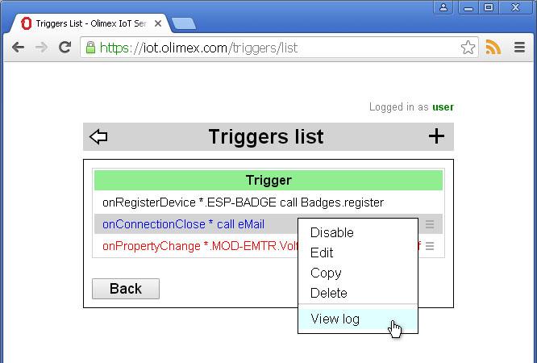
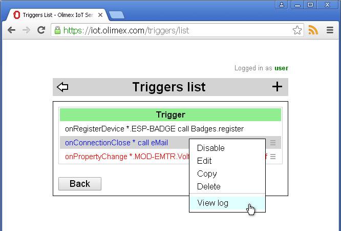
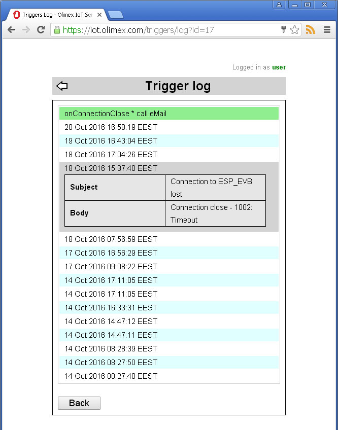

and select View Log from management menu
and select View Log from management menu  .
.
Back to OlimexIoT Help
To view Trigger Log from main scren click on the trigger icon
and select View Log from management menu .
 

On Trigger Log page you can see last 15 times trigger fired. If you click on the log entry parameters passed to the called action will be shown.
Back to OlimexIoT Help